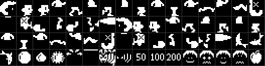
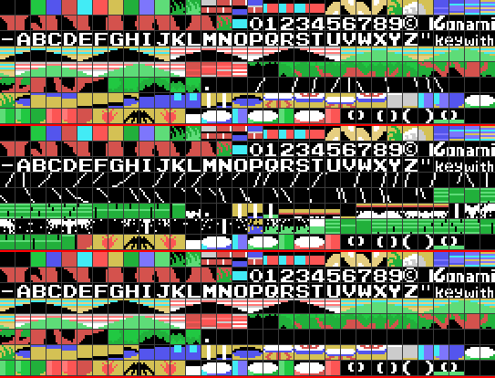

El programa principal son dos bytes: jr $ en 0x40A7. El juego corre en el gancho H.KEYI, al que la BIOS llama en cada barrido de pantalla, y que siempre hace las mismas tres cosas (0x4038):
785D el sonido, siempre, aunque el fotograma anterior no acabara
40B3 los mandos, solo con partida en marcha
412A un paso del juego: el estado que diga 0xE000y nada más. No hay un bucle principal al que volver.
Los saltos a direcciones calculadas son aquí una rutina propia, 0x40A9, y usa un truco que aparece por todo el cartucho: **la tabla va pegada detrás de su propio call**.
DESPACHA:
add a,a ; 40a9
pop hl ; 40aa la direccion de retorno ES la tabla
call HL_MAS_A ; 40ab
ld e,(hl) ; 40ae
inc hl ; 40af
ld d,(hl) ; 40b0
ex de,hl ; 40b1
jp (hl) ; 40b2El pop hl recoge la dirección de retorno, que es donde empieza la tabla, la indexa y salta. Nunca vuelve al que le llamó. Hay cinco tablas así:
| Tabla | Cuántas | Lo que elige |
|---|---|---|
| 0x4149 | 20 | el estado del juego |
| 0x41F8 | 2 | los dos pasos del menú |
| 0x5C7F | 4 | cuál de los cuatro cielos se pinta |
| 0x5E85 | 4 | qué combinación de copas de árbol va arriba |
| 0x66C2 | 17 | lo que está haciendo el jugador |
Como la tabla son datos en mitad del camino del código, un trazador estático se mete de largo. Para eso está src/athletic.nocode: cinco rangos, uno por tabla.
0x5F65 es lo único que pone una distribución en pantalla, y coge sus argumentos igual: **seis bytes detrás del call**, dos punteros y una dirección de vídeo.
MOTOR_DE_ROTULOS:
pop hl ; 5f65 los seis bytes de parametros
ld de,0e150h ; 5f66
ld bc,00006h ; 5f69
ldir ; 5f6c
push hl ; 5f6e se sigue detras de ellosLa lista es una tira de cuentas: n copia n tiles de la lista de tiles, n con el bit 7 puesto rellena n posiciones con un solo tile, un 0x80 suelto dice que detrás va una dirección nueva, y un cero termina. Diecinueve llamadas, y cuatro de ellas escriben la tabla de colores en vez de la de nombres (de 0x70F0 en adelante): el mismo motor, apuntando a 0x0000 y no a 0x3800.
Por eso el trazador necesita la directiva !skip 0x5F65 6: esos seis bytes no son instrucciones, y ejecutarlos descarrilaría todo lo que viene detrás.
0x585E, por orden: los 128 bytes de atributos de sprite suben a la memoria de vídeo de una sola copia —los 32 sprites, cada fotograma—; justo en el paso veinticuatro se encienden los obstáculos que se mueven; y luego, solo mientras el jugador esté vivo, el reloj, los contadores y las once cosas que se mueven, y al final él.
Los contadores son el detalle fino. 0xE130 cuenta fotogramas, y encima de él hay cuatro más que corren cada 8, 9, 10 y 11 fotogramas (0x5FD2). Esos cuatro son las fases: las dos lianas se llevan el de 8 y el de 10, y las cuatro tablas de los surtidores una cada uno, así que las cuatro tablas no suben y bajan nunca a la vez. Y son lo único que sobrevive al borrado de la pantalla (0x5A64): entras en una pantalla nueva y las lianas están donde estaban.
No hay una velocidad vertical en ninguna parte. Un salto es una lista de incrementos entre un 0xFE y un 0xFF, recorrida en un sentido restando —hacia arriba, cada vez menos— y en el otro sumando (0x61B7). Al tocar el 0xFF se da la vuelta; al volver al 0xFE se acaba el salto.
El salto normal son estos dieciséis bytes de 0x6CF5:
4 4 3 3 3 3 2 2 2 2 1 1 1 1 0 0Dieciséis fotogramas de subida y dieciséis de bajada, 32 puntos de altura, y la caída es la subida leída al revés: exactamente simétrica, porque son los mismos bytes. Hay cuatro listas así, y todo lo que se despega del suelo usa una:
| 0x6CF5 | el salto normal, el bote sin botón, y caerse de una tabla o de un poste |
| 0x63C9 | el bote alto del trampolín, y la bola que bota |
| 0x63A5 | una bola que rueda dando botes altos |
| 0x63B7 | una bola que rueda casi plana |
| 0x6CE3 | hundirse, y una bola a medio camino |
El arco del jugador se recorre a un incremento por fotograma, y mientras está en el aire la misma rutina mira además si ha tocado el cabo de una liana (0x6C3C).
Un sprite del MSX1 es de un color, así que el niño son cuatro: dos arriba —cabeza y cuerpo, rojo y amarillo— y dos abajo —las piernas, magenta y azul—. La pose 0xE136 indexa la tabla de 0x6B8A, catorce registros de cuatro patrones: del 0 al 6 mirando a la derecha, del 7 al 13 los mismos mirando a la izquierda.
Debajo, el sprite 8: su misma X, patrón 0xD4, negro. Se queda en Y 0x8C mientras él está en el suelo o colgado de una liana, desaparece mientras está en el aire, y le sigue dieciséis puntos por debajo mientras va encima de un trampolín, de una tabla, de un poste o del tronco — que es lo que te dice dónde estás.
Estos son los 64 patrones de sprite, reconstruidos de la memoria de vídeo tal como la carga el cartucho. Los 23 que miran a la derecha están dibujados en el cartucho, los 23 siguientes son esos mismos espejados bit a bit al cargar, y los 18 últimos son todo lo demás: los peces, las bolas, la araña, la sombra, los rótulos de 50/100/200, las cuatro caras y la fruta. Salen en blanco sobre negro porque el color no está en el patrón: el juego lo escribe en el registro de atributos.

En el modo gráfico 2 cada tercio de la pantalla tiene su propio banco, y el cartucho los usa como tres juegos de tiles distintos. Esta es la tabla de patrones con sus colores, reconstruida repitiendo las copias del propio cartucho: la fuente está en los tres tercios —se carga una vez y se copia dos—, el decorado va donde se va a dibujar, y el tercio de en medio se lleva las lianas y los surtidores.

La tabla que sube en el chorro no se mueve: se vuelve a dibujar. 0x56DD es una tabla de dieciocho punteros, y cada uno apunta a diecinueve bytes: un bloque de 6×3 tiles, y luego un byte más, la altura de la tabla —0x52 abajo, 0x32 arriba, de dos en dos—. 0x60B7 pinta el bloque y devuelve ese byte, que es sobre lo que luego se pone el jugador.
La fase va de 0 a 31: del 18 en adelante se lee hacia atrás, así que dieciocho dibujos hacen una subida y una bajada enteras.
Tres canales, diez bytes de estado cada uno, desde 0xE010: cuántos fotogramas le quedan a la nota, su duración, qué sonido está sonando, el puntero a su pista, cuántas octavas hacia abajo, y el volumen con su envolvente.
Pedir un sonido es llamar a 0x77FE con un número. Por debajo de 0x8E es un efecto y se lleva el canal C solo; 0x8E es la música de la partida y se lleva el A y el B; del 0x90 en adelante, los tres. El número es la prioridad: uno nuevo solo desplaza a otro más bajo (0x781C). La tabla de 0x796A tiene 34 punteros, con los canales de cada sonido seguidos.
El reproductor lee dos formatos, que distingue por el bit 7 del número del sonido:
| efecto | 0x2n fija la duración de las notas, y luego dos bytes: volumen y un periodo de 12 bits |
| música | 0xFD oo fija la octava y el volumen de arranque, y luego un byte por nota: duración en el nibble alto, nota en el bajo, y el 12 es silencio |
0xFE vuelve a empezar la pista —así se repite la música de la partida— y 0xFF apaga el canal. La envolvente solo la lleva la música: la nota arranca a su volumen, baja tres pasos en tres fotogramas, se mantiene, y baja dos más al acabar.
Y un sonido se ríe de los demás: el número 6 es una pista que solo contiene 0xFF. Se pide cuando la abeja se va de la pantalla y cuando dejas una pantalla, y lo único que hace es apagar el canal de efectos — que es la única manera de callar el zumbido.